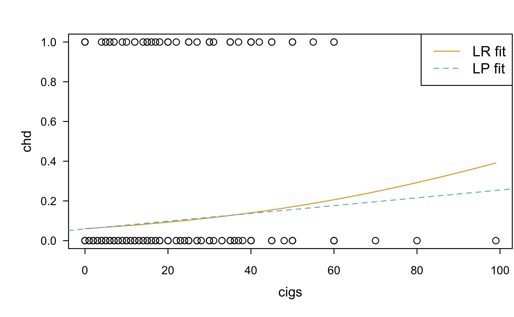
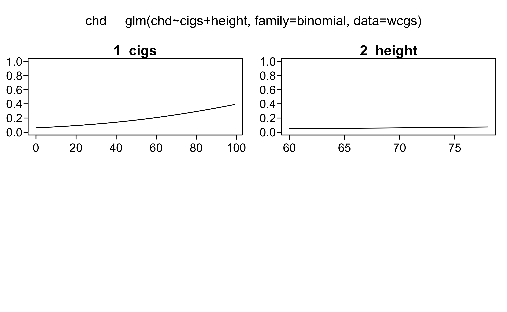

Logistic Regression (Part I)
Brandon M. Greenwell, PhD
University of Cincinnati
Western collaborative group study
\(N = 3154\) healthy young men aged 39–59 from the San Francisco area were assessed for their personality type. All were free from coronary heart disease at the start of the research. Eight and a half years later change in this situation was recorded. See ?faraway::wcgs in R.
Structure of wcgs data
'data.frame': 3154 obs. of 13 variables:
$ age : int 49 42 42 41 59 44 44 40 43 42 ...
$ height : int 73 70 69 68 70 72 72 71 72 70 ...
$ weight : int 150 160 160 152 150 204 164 150 190 175 ...
$ sdp : int 110 154 110 124 144 150 130 138 146 132 ...
$ dbp : int 76 84 78 78 86 90 84 60 76 90 ...
$ chol : int 225 177 181 132 255 182 155 140 149 325 ...
$ behave : Factor w/ 4 levels "A1","A2","B3",..: 2 2 3 4 3 4 4 2 3 2 ...
$ cigs : int 25 20 0 20 20 0 0 0 25 0 ...
$ dibep : Factor w/ 2 levels "A","B": 1 1 2 2 2 2 2 1 2 1 ...
$ chd : Factor w/ 2 levels "no","yes": 1 1 1 1 2 1 1 1 1 1 ...
$ typechd: Factor w/ 4 levels "angina","infdeath",..: 3 3 3 3 2 3 3 3 3 3 ...
$ timechd: int 1664 3071 3071 3064 1885 3102 3074 3071 3064 1032 ...
$ arcus : Factor w/ 2 levels "absent","present": 1 2 1 1 2 1 1 1 1 2 ...Description of each variable
age: age in yearsheight: height in inchesweight: weight in poundssdp: systolic blood pressure in mm Hgdbp: diastolic blood pressure in mm Hgchol: fasting serum cholesterol in mm %behave: behavior type which is a factor with levels A1 A2 B3 B4cigs: number of cigarettes smoked per daydibep: behavior type a factor with levels A (Agressive) B (Passive)chd: coronary heat disease developed is a factor with levels no yestypechd: type of coronary heart disease is a factor with levels angina infdeath none silenttimechd: time of CHD event or end of follow-uparcus: arcus senilis is a factor with levels absent present
For now, we’ll focus on 3 variables
chd height cigs
no :2897 Min. :60.00 Min. : 0.0
yes: 257 1st Qu.:68.00 1st Qu.: 0.0
Median :70.00 Median : 0.0
Mean :69.78 Mean :11.6
3rd Qu.:72.00 3rd Qu.:20.0
Max. :78.00 Max. :99.0
Anything interesting stick out?
Visualizing discrete data
Pie chart of response ü§Æ
Show R code
no yes
0.91851617 0.08148383 Visualizing discrete data
Bar charts tend to be more effective
Visualizing discrete data
Mosaic plot showing relationship between cigs and chd; not incredibly useful IMO unless both variables are categorical
Visualizing discrete data
Nonparametric density plot of height by chd status using lattice graphics:
Visualizing discrete data
Boxplot of cigs vs. chd status

Visualizing discrete data
Boxplot of cigs vs. chd status
Visualizing discrete data
Boxplot of height vs. chd status with notches
Visualizing discrete data (detour)
Decision trees üå≤üå¥üå≥ are immensely useful for exploring new data sets!
Some useful resources:
See the documentation for R packages rpart, party, and partykit
Recursive Partitioning and Applications (logistic regression and trees)
The ultimate tree book üòé
Visualizing discrete data
Standard CART-like decision tree using rpart and rpart.plot (all variables allowed):
Visualizing discrete data
Conditional inference tree using partykit (using only variables of interest):
Observations so far…
- It seems that the
cigsis positively associated with the binary responsechd - It is not clear how, if at all,
heightis associated withchd - Question: how can we build a model to examine these potential associations?
Linear models
Recall that in linear regression we model the conditional mean response as a linear function in some fixed, but known parameters \(\boldsymbol{\beta}\):
\[ E\left(Y|\boldsymbol{x}\right) = \beta_0 + \beta_1x_1 + \dots \beta_px_p = \boldsymbol{\beta}^\top\boldsymbol{x} \]
If \(Y\) is a binary random variable, then what is \(E\left(Y|\boldsymbol{x}\right)\)?
The linear probability (LP) model
It turns out that \(E\left(Y|\boldsymbol{x}\right) = P\left(Y = 1|\boldsymbol{x}\right)\). The LP model assumes that \[ P\left(Y = 1|\boldsymbol{x}\right) = \beta_0 + \beta_1x_1 + \dots \beta_px_p = \boldsymbol{\beta}^\top\boldsymbol{x} \]
Is this reasonable?
The LP model: chd vs. cigs
Call:
lm(formula = y ~ cigs, data = wcgs)
Residuals:
Min 1Q Median 3Q Max
-0.25268 -0.09794 -0.05876 -0.05876 0.94124
Coefficients:
Estimate Std. Error t value Pr(>|t|)
(Intercept) 0.0587608 0.0062041 9.471 < 2e-16 ***
cigs 0.0019588 0.0003339 5.867 4.91e-09 ***
---
Signif. codes: 0 '***' 0.001 '**' 0.01 '*' 0.05 '.' 0.1 ' ' 1
Residual standard error: 0.2722 on 3152 degrees of freedom
Multiple R-squared: 0.0108, Adjusted R-squared: 0.01049
F-statistic: 34.42 on 1 and 3152 DF, p-value: 4.91e-09Are the standard errors here appropriate? Why/why not?
The LP model: chd vs. cigs
The logistic regression (LR) model
Assume \(Y \sim \mathrm{Bernoulli}\left(p\right)\), where \[ p = p\left(\boldsymbol{x}\right) = P\left(Y = 1|\boldsymbol{x}\right) \] and \[ \mathrm{logit}\left(p\right) = \log\left(\frac{p}{1-p}\right) = \boldsymbol{\beta}^\top\boldsymbol{x} \] In other words, LR models the logit of the mean response as a linear function in \(\boldsymbol{\beta}\); we’ll refer to the term \(\eta = \boldsymbol{\beta}^\top\boldsymbol{x}\) as the linear predictor. Why does this make more sense?
The logistic regression (LR) model
Can always solve for \(p\) to get predictions on the raw probability scale (Homework 2 üòÑ): \[ p\left(\boldsymbol{x}\right) = \frac{\exp\left(\boldsymbol{\beta}^\top\boldsymbol{x}\right)}{1 + \exp\left(\boldsymbol{\beta}^\top\boldsymbol{x}\right)} \]
Note how the LR model is nonlinear in \(p\)!
Fitting an LR model in R
- Use the
glm()function instead oflm() - GLM stands for generalized linear model, which includes the LR and ordinary linear regression models as special cases
- Many (but not all) of the models we’ll discuss in throughout this course belong to the class of GLMs
- Note how we have to specifcy the
familyargument! (see?glmfor details) - The response can be a 0/1 indicator or a factor variable (be careful with interpretation and which class is used as the baseline):
Fitting an LR model in R
Call:
glm(formula = chd ~ cigs, family = binomial, data = wcgs)
Deviance Residuals:
Min 1Q Median 3Q Max
-0.9958 -0.4418 -0.3534 -0.3534 2.3684
Coefficients:
Estimate Std. Error z value Pr(>|z|)
(Intercept) -2.742160 0.092111 -29.770 < 2e-16 ***
cigs 0.023220 0.004042 5.744 9.22e-09 ***
---
Signif. codes: 0 '***' 0.001 '**' 0.01 '*' 0.05 '.' 0.1 ' ' 1
(Dispersion parameter for binomial family taken to be 1)
Null deviance: 1781.2 on 3153 degrees of freedom
Residual deviance: 1750.0 on 3152 degrees of freedom
AIC: 1754
Number of Fisher Scoring iterations: 5Fitting an LR model in R
Let’s compare the fitted LR and LP models:
Fitting an LR model in R
Let’s compare the fitted LR and LP models:
Show R code
Fitting an LR model in R
Now let’s include an additional predictor (i.e., height):
Call:
glm(formula = chd ~ cigs + height, family = binomial, data = wcgs)
Deviance Residuals:
Min 1Q Median 3Q Max
-1.0041 -0.4425 -0.3630 -0.3499 2.4357
Coefficients:
Estimate Std. Error z value Pr(>|z|)
(Intercept) -4.50161 1.84186 -2.444 0.0145 *
cigs 0.02313 0.00404 5.724 1.04e-08 ***
height 0.02521 0.02633 0.957 0.3383
---
Signif. codes: 0 '***' 0.001 '**' 0.01 '*' 0.05 '.' 0.1 ' ' 1
(Dispersion parameter for binomial family taken to be 1)
Null deviance: 1781.2 on 3153 degrees of freedom
Residual deviance: 1749.0 on 3151 degrees of freedom
AIC: 1755
Number of Fisher Scoring iterations: 5Interpreting LR coefficients
- Let \(p = P\left(Y = 1\right)\) and \(1 - p = P\left(Y = 0\right)\)
- The odds of \(Y = 1\) occuring is defined as \(p / \left(1 - p\right)\)
- For a fair coin ü™ô, the probability of getting tails is \(p = 0.5\). Therefore, the odds of getting tails vs. heads is \(p / (1 - p) = 0.5 / 0.5 = 1\). (We might also say the odds of getting tails is ‚Äú1 to 1‚Äù).
For a fair die üé≤, what are the odds of rolling a 2?
Interpreting LR coefficients
The logit models the log odds of success (i.e., \(Y = 1|\boldsymbol{x}\)) \[ \log\left(\mathrm{odds}\right) = \log\left(\frac{p}{1-p}\right) = \beta_0 + \beta_1x_1 + \beta_2x_2 + \dots \beta_px_p \] Exponentiating both, we get \[ \mathrm{odds} = \frac{p}{1-p} = \exp{\left(\beta_0\right)}\times\exp{\left(\beta_1x_1\right)}\times\exp{\left(\beta_2x_2\right)}\times\dots\times\exp{\left(\beta_px_p\right)} \]
- In the LR model, \(\beta_i\) represents the change in the log odds when \(x_i\) increases by one unit (all else held constant)
- In the LR model, \(\exp\left(\beta_i\right)\) represents the multiplicative increase in the odds when \(x_i\) increases by one unit (all else held constant)
- CANNOT interpret the coefficients in terms of \(p\) directly‚Ķeffect plots to the rescue üõü!!
WCGS study
Holding
heightconstant, for every additional cigarette smoked per day the predicted log odds of developingchdincreases by 0.023Holding
heightconstant, for every additional cigarette smoked per day the predicted odds of developingchdincreases multiplicatively by 1.023
Effect plots
Lot’s of different methods and packages:
- Marginal effects via effects library
- Partial dependence (PD) plots and individual conditional expectation (ICE) plots via the pdp package
- Marginal effect and PD plots via the plotmo library
- And many, many more (see R’s ML Task View)
- All have there own assumptions and drawbacks; typically, similar in shape when the model is additive in nature (i.e., no interaction effects)
Effect plots
The plotmo library is an “easy button” for quick and dirty effect plots (other variables are held fixed at their median or most frequent value) and supports a wide range of models
Effect plots
I generally prefer PD plots; see Greenwell (2017) for details
Effect plots
Can easily extend these methods to two or three variables:
Effect plots
Three-dimensional plots look cool, but generally aren’t all that useful:
ML estimation (Bernoulli)
In the linear model, LS and ML estimation are equivalent and rather straightforward
Recall that if \(Y_i \stackrel{iid}{\sim} Bernoulli\left(p\right)\), then the likilhood function is defined as
\[ L\left(p\right) = \prod_{i=1}^n p^{y_i} \left(1-p\right)^{1-y_i} \]
ML estimation (Bernoulli)
Theoretically, goal is to maximize \(L\left(p\right)\)
In practice, it’s easier to work with the log likelihood \(l\left(p\right) = log\left[L\left(p\right)\right]\)
\[ \begin{align} l\left(p\right) &= \log\left[\prod_{i=1}^n p^{y_i} \left(1-p\right)^{1-y_i}\right]\\ &= \cdots\\ &= \log\left(p\right)\sum_{i=1}^ny_i + \log\left(1-p\right)\sum_{i=1}^n\left(n-y_i\right) \end{align} \]
ML estimation (LR)
In LR, \[ p_i = p\left(\boldsymbol{x}_i\right) = \frac{\exp\left(\boldsymbol{\beta}^\top\boldsymbol{x}_i\right)}{1 + \exp\left(\boldsymbol{\beta}^\top\boldsymbol{x}_i\right)} \]
This becomes a more complicated optimization problem!
Equivalent to minimizing log loss in machine learning
Log loss is a proper scoring rule
ML estimation (LR)
Maximizing the log-likelihood is equivalent to minimizing the negative log-likelihood (which is more convenient):
Show R code
# Response (as a binary 0/1 variable)
y <- ifelse(wcgs$chd == "yes", 1, 0)
# Model matrix; includes a column for the intercept by default
X <- model.matrix(~ cigs + height, data = wcgs)
# Function to compute the negative log-liklihood (as a function of the betas)
nll <- function(beta) {
lp <- X %*% beta # linear predictor; same as b0 + b1*x1 + b2*x2 + ...
-sum(y * lp - log(1 + exp(lp)))
}
# Use general optimization; would be better to use gradient and hessian info (e.g., first and second derivative info)
lp.fit <- lm(y ~ cigs + height, data = wcgs)
optim(coef(lp.fit), fn = nll,
control = list("maxit" = 9999, "reltol" = 1e-20))$par
(Intercept) cigs height
-4.50160987 0.02312741 0.02520773
$value
[1] 874.5246
$counts
function gradient
679 NA
$convergence
[1] 0
$message
NULLWald statistic
- Consider the usual marginal test: \(H_0: \beta_j = 0\) vs. \(H_1: \beta_j \ne 0\)
- Assymptotically speaking, \(Z_i = \hat{\beta}_i / \mathrm{SE}\left(\hat{\beta}_i\right)\) has a standard normal distribution under \(H_0\)
- This leads to the usual Wald-based confidence intervals, etc.
- Better (but more complicated) approaches available, like likelihood ratio tests, profile likelihood methods, and the bootstrap.
Extending the general linear F-test
In LR, we move from a general linear F-test to a likelihood ratio test based on the \(\chi^2\) distribution: \[ X = -2\log\left(\frac{L_{H_0}}{L_{H_1}}\right) = D_{H_0} - D_{H_1} \sim \chi^2\left(df\right) \]
Try by hand:
Show R code
stat pval
0.9202473 0.3374101 Extending the general linear F-test
Can do this automatically using R’s anova() function:
Confidence intervals
Lot’s of ways to do this (some bad, some better). R defaults to using a profile likelihood method:
Questions‚ùì‚ùì‚ùì

BANA 7042: Statistical Modeling